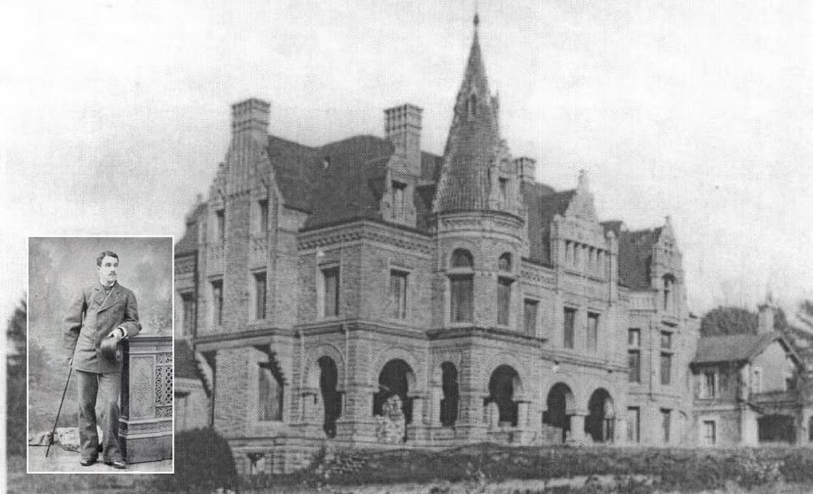
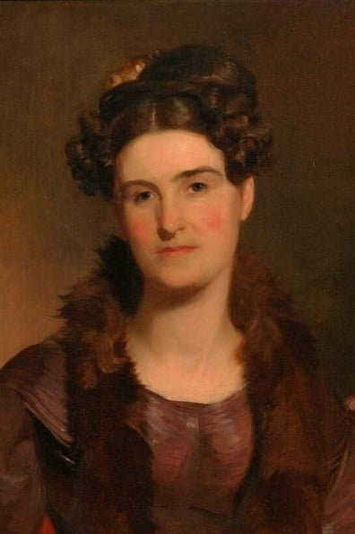

Straight from the 1885 annals of "Robin Leach's Lifestyles of the Rich and Famous" comes this fascinating report, a surprising glimpse into the opulence of Cornwall, Pennsylvania in the 19th century.
Introduction
A published record of the Dauphin County Centenary Exhibition graciously recognized the generous support shown by Cornwall's Iron Baron Robert H. Coleman with his loan of cherished souvenirs from European travels.
Not just Robert, but his mother, aunts and cousins made frequent trips to Europe, boarding steamships in the springtime bound for England and France and staying for months. Their letters record the anticipation of the annual trip, with an occasional regret — "Sorry, I shan't be able to travel abroad with you this year."
Wm. Henry Egle's book (1886) on the Centenary Exhibition records the following exhaustive list of donated possessions. One might assume that these are just a part of his total collection. Just reading the items invites many questions and an opportunity to "google" some arcane bits of European history.
[Note: the following lists are quoted exactly as described in Egle's account.]
Coleman, Robert H. — Cornwall
- Two old paintings of Venice, by Vetunhe
- Two old clocks, time of Louis XIV
- Table cover owned by Marie Antoinette
- Piece of green velvet, embroidered in fleurs de lis and gold stars, used as a rug by Marie Antoinette at Trainon
- Two gilt chairs, with imperial eagle in a crown on the back, belonging to a set owned by Napoleon I
- Three old Roman statuettes
- Bronze group, Farnese bull
- Pair of old bronze knockers
- Gilt fire set (five pieces) used by Napoleon at Elba
- Pair of andirons used by Napoleon at Elba
- Old majolica inkstand
- Carved walnut bellows, Italian, of the sixteenth century
- Breast pin—antique Grecian work—turquoise, cameo, bacchanalian scene
- Three gold Etruscan rings, from tombs near Betolle
- Child's bronze chair, buried in the tomb of a young Prince, near Naples, 2,500 years ago (this is the only perfect chair of its kind ever found)
- Bottle from the tomb of Chiusi
- Six vases, etc., of curious shapes, from Cortona
- Three Chinese mummies, from Cortona
- Three Roman lamps
- Two old Etruscan terra cotta panels
- Old terra cotta—St. John preaching in the wilderness
- Six old Etruscan vases
- Old Dutch inlaid table, containing writing desk, chess board, etc.
- Three ribbons of the Order of the Legion of Honor, worn constantly by Napoleon, and afterwards given by him to his brother Jerome
- Report, addressed to General Napoleon Bonaparte, Commander-in-chief, and containing his signature
- Old ebony box, inlaid with ivory, and representing mythological subjects
- Head of scepter of an Etruscan high priest, very rare, from a tomb at Corneto
- Etruscan bronze specular mirror, very fine, from tomb at Orvieto
- String of Etruscan beads, from tomb at Chiusi, near Naples
- Bronze bracelet from same tomb
- Two old Grecian capitals
- Silver frontlet—antique—tomb at Corneto
- Set of necklace and armlets, from same tomb. Of great interest and value.
- Pair of ear rings, from tomb at Orvieto
- Pair of Venitian ear rings, (A. D. 1550.)
- Carved wooden chair, from San Donato palace
- Case of small jewelry, found in tombs at Orvieto, Sarteano and Chiusi
- Ancient Roman comb, for hair ornament
- Pair of ear-rings from Sarteano, with marks of fire on them, the corpse having been burned
- Bronze rings from Chiusi
- Writing desk, in gold and silver gilt, given by the Queen of Westphalia to her husband, King Jerome, brother of Napoleon Bonaparte. In the center are the initials J. N., with the royal crown, and are also on the other parts of the desk. There are secret springs which open places where the king kept many private papers.
- Marble bas relief, A. D. 1550. Subject: Faun, satyr, etc.
- Terra cotta bas relief, of old Florentine school Jupiter
- Two old rebel flags [a local researcher claims these are from Fort Sumter]
- Embroidered picture, very valuable.
- Knives, spoon, and fork, gold; belonged to Marie Antoinette
- Two pieces of Persian metal work.
- Stiletto, belonged to Corsini de Medici, A. D. 1540, with the arms of the Medici family engraved on one side and the initials of Corsini on the other. The sheath is silver mounted. The knife itself is hollow, and serves as a sheath to a very fine stilletto, with a notched point for poison, to which the great duke used to treat (?) his friends when he wished to quietly dispose of them. The silver chain was worn around the waist and attached to the belt by a large silver clasp, on which are the head of Jupiter and the arms of the Medici in high relief.
- Jeweled box, with the eagle of France and the arms of Westphalia and Wurtemburg in gold. Belonged to Catharine of Wurtemburg, Queen of Westphalia
- Knife, fork, and spoon (silver) used by Napoleon at Elba
- Music stand, designed by Louis XVI, when Dauphin, for Marie Antoinette, with monogram in the center.
- Silver and gilt chalice, ornamented with medalions which represent the portraits of Peter the Great, Catharine and Alexis, the Russian eagle and two inscriptions, (Russian)
- Hexagonal tea caddy
- Pair of Japanese bronze candle-sticks
- Crown of Madonna in silver
- Tankard, silver and gilt (1707)
- Tankard, silver (1705)
- Tankard, Russian work. On the cover the head of Peter the Great, around the tankard, a subject from the Old Testament, Isaac and Rebecca.
- Tankard, German work of the seventh century
- Tankard, Holland.
- Vase, with portrait and arms of Napoleon, presented to him by his brother
The competition between the "north" and "south" branches of the Coleman family's Iron Dynasty (Cornwall and Lebanon) is legendary. Ownership of the various 1/96th shares of Cornwall Ore Bank and fights over who was taking how much iron to their respective furnaces were occasionally argued in the local courts. One could imagine the writers of those fictional TV series "Dallas" and "Dynasty" taking their scripts from the Coleman family archives.
Yet both branches were known for their beneficence; many fine churches, buildings and hospitals still stand in this county thanks to them. So not to be out-done, Mrs. G.D. Coleman of the Lebanon branch contributed her share of finery to the Dauphin County celebration.


Coleman, Mrs. G. Dawson — Lebanon
- Tea pot, a specimen of the earliest English plated ware. Part of Captain George Dawson's camp outfit in the Revolution
- Repeating watch in blue enamel. The figures on the face strike the bells every hour
- Very old Swiss watch
- Antique enameled watch. The chatelaine a rooster with its tail of rubies, diamonds, and emeralds, and the body formed of one large pearl
- Antique enameled watch in an enameled stand. Italian.
- Old enameled pendant. Italian.
- Order of St. George. English.
- Old enameled Venetian ear rings
- Tankard of 1700
- Pair old silver beer mugs
- Pair old silver goblets
- Pair silver drinking cups, from Russia
- Old silver baptismal cup from Norway
- Silver rose water sprinkler from Constantinople
- Scissors of Damascus steel, inlaid with gold, from Damascus
- Silver necklace from India
- Silver necklace from Algiers
- Silver lamp from the Holy Sepulchre at Jerusalem
- Gold sugar bowl and spoon and cream pitcher from Russia
- Two large spoons, in gold and enamel, from Russia
- Pair old silver coasters for decanters. English
- Nubian necklace set with uncut stones
- Pearl shell from the Red Sea, carved at Bethlehem, in the Holy Land
- Book of pressed flowers gathered in various parts of the Holy Land and bound in Jerusalem in olive wood from the Mt. of Olives
- Antique lamp. Rome
- Ornament cut from Jade, the holy stone of China
- Picture painted on a cobweb
- Old silver lamp made in Jerusalem
- Presse papier, ornamented with the various stones 'of Russia
- Very old plate. Vienna
- Old Delph china ornaments set in silver
- Screen of very old Chinese tiles
- Antique fan of 1780
- Antique cloisonne ornaments—various colors. Chinese
- Specimen of the first china made near Philadelphia
- Specimen of glass cut at Pittsburgh early in this century
- Antique bellows of the sixteenth century. Venice
- Very old bronze knocker. Italian
- Silk dress, embroidered by hand, and worn at the Court of Queen Anne-1706
- Antique medicine case, in sections, of gold and lacquer. Chinese
- Six antique spoons, marked in Hebrew. Jerusalem
- Two large antique Apostle spoons.
- Four very old spoons from Holland.
- Antique Swiss spoon of the Canton Berne
- Twelve very old silver Apostle spoons
- Six gold tea spoons, enameled with views, very old. Russia
- Eight gold tea spoons, enameled in colors. Russia
- Two very old Apostle spoons, with bowls of wood
- Three silver Nubian bangles
- Silver necklace from an Arab Sheik
- Silver ornament worn by the women of Bethlehem on the top of the head
- Silver ornament worn by the Bethlehem women under the chin, and fastened to the head piece
- Dutch spoon marked 1590
- Pair of silver ornaments worn by horses in Arabia
- Saddle cloth used by an Arab Sheik
- Specimen of very old India embroidery
- Old Russian embroidery
- Two pieces of silk woven with gold thread at Damascus
- Two silk sashes woven with gold thread at Damascus, Syria
- Silk sash worn by Arab runners at Cairo, Egypt
- Two pieces of old embroidery from Cairo, Egypt
- Piece of ancient embroidery from Bethlehem in the Holy Land
- Turkish towel embroidered in gold
- Old bouquet holder. Chinese
- Antique set of enamel
- Articles dug from the ruins of Pompeii
- Very old Turkish silver coffee set from Constantinople
- Pair antique bracelets, in silver and enamel, from Syria
- Pair old English spoons
- A very old English spoon, with a coin in the bowl
- Antique vinaigrette in enamel. Italian
- Old spoon from Norway
- Silk pieces worn by Arabs wound around the fez
- Holy Bible, illustrated-1690
- Two books printed by Benjamin Franklin in 1742
- Book printed by Benjamin Franklin in 1755
- Book printed by Benjamin Franklin in 1757
- Book printed by Benjamin Franklin in 1764
- History of York, printed at York, in 1834
- Book published by John Wyeth, at Harrisburg, in 1811
- The conduct of the Paxtang men—1764
- New England Rarities—1672
- The Chronicles, written in Latin and illustrated
- Book by Dr. Martin Luther, printed at Jena, 1562
- Pennsylvania Chronicle and Universal Advertiser, printed in Philadelphia, 1768
- New Discovery of a Vast Country in America, extending about 4,000 miles between New France and New Mexico. Printed in London, 1698
- Principall Navigations, Voiages and Discoveries of the English Nation. London-1589
It boggles the mind to consider that such riches found their home here in sleepy Cornwall and also North Lebanon. Although the mansions that housed them are long gone the question is, "Where are these treasures today?"